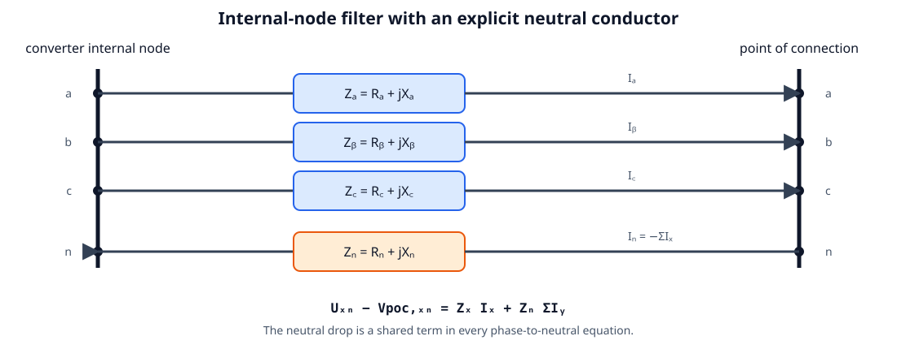
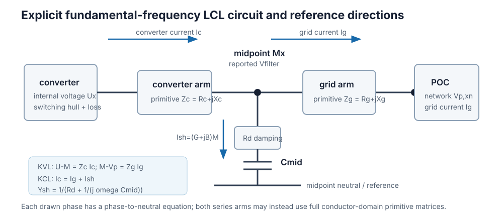
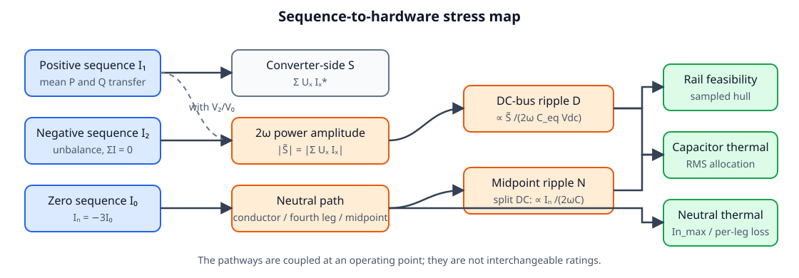
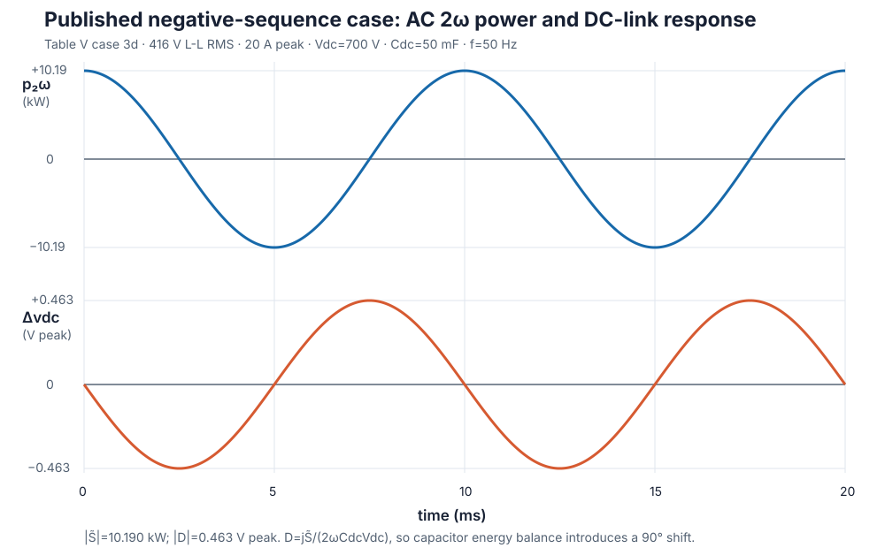
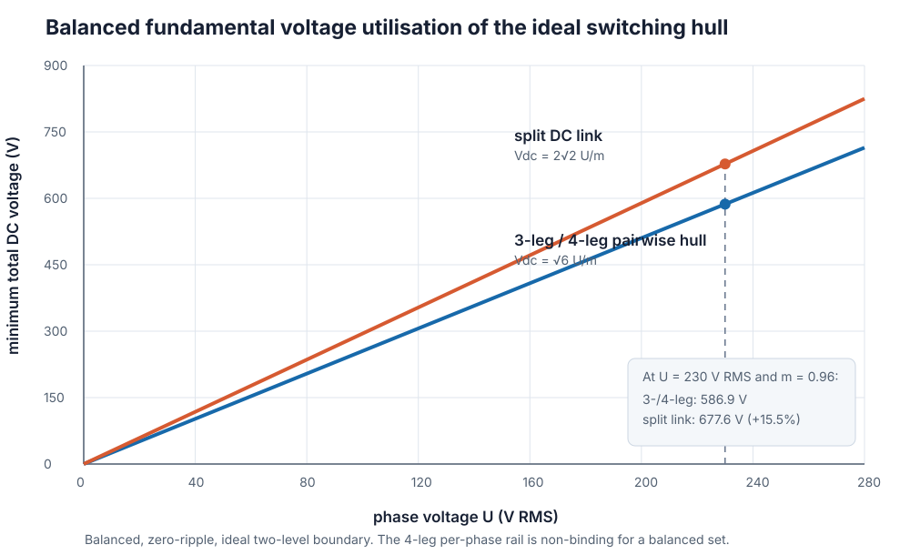
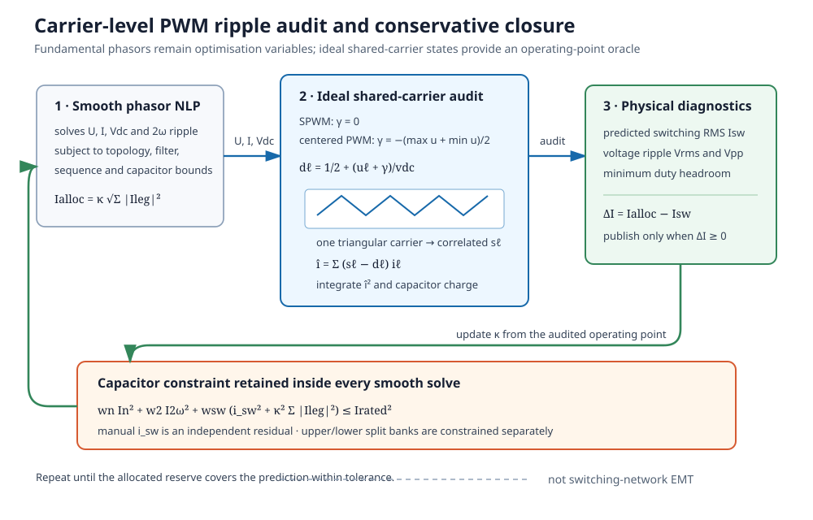
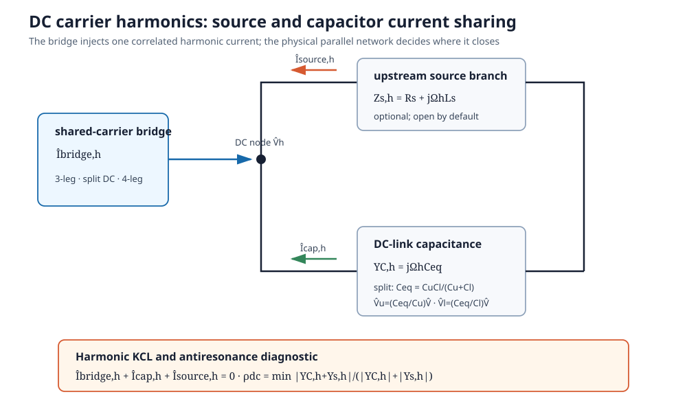
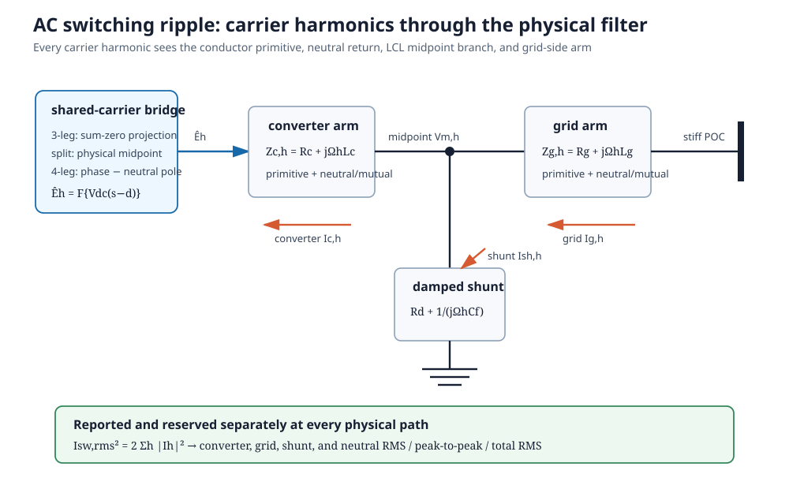

Scientific foundations
This page derives the equations stamped by AdvancedInverter. All phasors are fundamental-frequency RMS quantities in an a-b-c phase order. Displayed equations use SI units; the implementation applies the same equations after converting AC quantities to the network's per-unit bases.
1. Reference directions and internal node
For phase x, current $I_x$ is positive from the converter toward the POC. AC power is positive when injected into the network. DC power is positive when drawn from the DC source. Let $V_{p,xn}$ and $U_{xn}$ be POC and converter internal phase-to-neutral voltages. The most general implemented series element is a primitive conductor-domain impedance $\mathbf Z_f=\mathbf R_f+j\mathbf X_f$. Its conductor order is phase_terminals, followed by neutral when a physical neutral exists. In the reduced, single-arm model, with
\[\mathbf J=[I_a,I_b,I_c,I_n]^T,\qquad I_n=-\sum_x I_x,\]
conductor KVL is

\[\boldsymbol{\Delta V}=\mathbf Z_f\mathbf J, \qquad \boxed{U_{xn}-V_{p,xn}=\Delta V_x-\Delta V_n.}\]
The scalar parameters are the diagonal special case. With phase impedance $Z_x$ and neutral impedance $Z_n$, subtracting the neutral-conductor drop recovers
\[\boxed{U_{xn}-V_{p,xn}=Z_xI_x+Z_n\sum_y I_y.}\]
The second term is shared by all phases. Omitting it treats the neutral as an ideal zero-impedance reference even when a real return conductor is present. For a 3-wire bridge, $\sum I_x=0$, so it vanishes automatically. For a single-phase two-wire connection it gives the expected loop impedance $Z_x+Z_n$. Full r_filter_matrix and x_filter_matrix inputs additionally retain unequal self impedances and phase-phase, phase-neutral, or neutral-phase mutual coupling. Reciprocity is enforced by symmetry; $\mathbf R_f$ must be positive semidefinite so the element cannot generate real power.
Explicit LCL midpoint
When a grid-side arm or c_filter_mid is supplied, the model inserts an internal filter midpoint. Let $M_{xn}$ be its phase-to-neutral voltage, $I_{c,x}$ converter-arm current, and $I_{g,x}$ grid-arm current:

\[\boxed{U-M=\mathcal Z_c(I_c)},\qquad \boxed{M-V_p=\mathcal Z_g(I_g)},\qquad \boxed{I_{c,x}=I_{g,x}+I_{sh,x}}.\]
$\mathcal Z_c$ and $\mathcal Z_g$ denote the primitive conductor-domain drop operation above, including subtraction of the neutral-conductor drop. Each arm may use independent scalar or full matrix parameters. The midpoint branch is a per-phase capacitor in series with a damping resistor:
\[Y_{sh}(\omega)=\frac{1}{R_d+1/(j\omega C_f)}=G_f+jB_f, \qquad I_{sh,x}=Y_{sh}M_{xn}.\]
Consequently, converter current and grid current are no longer interchangeable. i_max limits $I_c$; i_grid_max independently limits $I_g$. For a three-leg bridge, $\sum I_c=0$ still applies at the converter. A grounded-wye midpoint capacitor can nevertheless exchange zero-sequence current with a physical grid neutral; this is a filter path, not a fourth semiconductor leg.
If $C_f=0$, KCL gives $I_c=I_g$ and the two series arms collapse exactly to their summed impedance. This limiting case is tested against the original single-arm formulation.
The optional POC shunt remains a separate scalar phase-to-neutral susceptance $b_p$:
\[I_{p,sh,x}=j b_p V_{p,xn}.\]
It changes POC reactive exchange but is not part of the LCL midpoint KCL.
The explicit LCL is evaluated only at the snapshot's fundamental frequency. For scalar inductive arms, the result reports the familiar undamped estimate
\[f_r=\frac{1}{2\pi}\sqrt{\frac{L_c+L_g}{L_cL_gC_f}}, \qquad L_c=\frac{X_c}{\omega},\quad L_g=\frac{X_g}{\omega}.\]
This is a screening diagnostic, not a stability claim. Matrix-valued filters do not have one scalar resonance, and controller delay, grid impedance, damping strategy, frequency-dependent parasitics, and modal resonances require an impedance scan or dynamic model.
2. Power and loss bookkeeping
Converter-side and POC powers follow directly from their respective currents:
\[S_{conv}=P_{conv}+jQ_{conv}=\sum_x U_{xn}I_{c,x}^*,\qquad S_{poc,series}=\sum_x V_{p,xn}I_{g,x}^*.\]
For the reduced primitive, the real-power difference is
\[P_{conv}-P_{poc,series}=\Re\{\mathbf J^H\mathbf Z_f\mathbf J\} =\mathbf J^H\mathbf R_f\mathbf J.\]
For the scalar diagonal parameterisation this becomes
\[P_{conv}-P_{poc,series} =\sum_x R_x|I_x|^2+R_n\left|\sum_x I_x\right|^2.\]
For the explicit LCL, the same balance extends across both arms and the damping branch:
\[\boxed{P_{filter}=P_{conv}-P_{poc} =\mathbf J_c^H\mathbf R_c\mathbf J_c +\mathbf J_g^H\mathbf R_g\mathbf J_g +R_d\sum_x|I_{sh,x}|^2.}\]
result.p_filter_loss reports this terminal difference. It is distinct from the fitted semiconductor p_loss; p_dc=p_conv+p_loss therefore includes the filter loss implicitly through the converter-side power required to deliver a given POC setpoint.
The semiconductor loss fit is kept separate:
\[P_{loss}=P_0+a\sum_{\ell\in\mathcal L}|I_\ell| +c\sum_{\ell\in\mathcal L}|I_\ell|^2, \qquad P_{dc}=P_{conv}+P_{loss}.\]
$\mathcal L$ contains the three phase legs and, for :FOUR_LEG, the neutral leg carrying $I_n$. For :SPLIT_DC there is no fourth semiconductor leg; neutral-induced capacitor heating is handled in the capacitor budget. The same $a$ and $c$ are applied to every included leg, so they should be understood as an equivalent fitted per-leg curve. Device-specific phase/neutral coefficients, temperature feedback, switching-state dependence, and reverse-conduction maps remain future refinements.
Numerically, the current-linear term uses the shifted smooth norm $\sqrt{|I|^2+\epsilon^2}-\epsilon$ with $\epsilon=1$ mA. It is zero at zero current, differs from $|I|$ by less than 1 mA, and avoids the singular Jacobian of an exact current-magnitude equality at the origin.
The non-branching equality is important: it stays valid in charging and discharging without binary direction variables or sign-dependent efficiency branches.
3. Symmetrical components and physical channels
With $\alpha=e^{j2\pi/3}$, Fortescue components are
\[\begin{bmatrix}I_0\\I_1\\I_2\end{bmatrix} =\frac13 \begin{bmatrix} 1&1&1\\1&\alpha&\alpha^2\\1&\alpha^2&\alpha \end{bmatrix} \begin{bmatrix}I_a\\I_b\\I_c\end{bmatrix}.\]
The implementation can constrain each RMS magnitude independently with i_zero_max, i_positive_max, and i_negative_max, and reports all three. For a physical neutral,
\[I_n=-(I_a+I_b+I_c)=-3I_0,\qquad |I_n|=3|I_0|.\]
This separates two effects that are often incorrectly combined into a single “unbalance” number. Zero sequence purchases a neutral-current path. Negative sequence can have $I_n=0$ but, when it interacts with positive-sequence voltage, produces double-frequency power. Voltage unbalance also couples the channels, so these statements are mechanisms, not a promise that an arbitrary unbalanced operating point contains only one stress.

4. Why the unconjugated product produces 2ω power
For RMS phasors $U$ and $I$, write instantaneous waveforms as
\[u(t)=\sqrt2\,\Re\{Ue^{j\omega t}\},\qquad i(t)=\sqrt2\,\Re\{Ie^{j\omega t}\}.\]
Their product separates into mean and double-frequency terms:
\[u(t)i(t)=\Re\{UI^*\}+\Re\{UIe^{j2\omega t}\}.\]
Summing phases therefore gives ordinary complex power from the conjugated sum and oscillating-power amplitude from the unconjugated sum:
\[S=\sum_x U_xI_x^*,\qquad \boxed{\widetilde S=\sum_x U_xI_x}.\]
In rectangular coordinates,
\[\widetilde S_{re}=\sum_x(U_x^{re}I_x^{re}-U_x^{im}I_x^{im}),\quad \widetilde S_{im}=\sum_x(U_x^{re}I_x^{im}+U_x^{im}I_x^{re}).\]
$|\widetilde S|$ is a sinusoidal amplitude, not RMS. This convention is validated against the six prescribed current patterns in Deakin, Heidari, and Deng's Table V and their PLECS results.

The figure is regenerated by docs/scripts/generate_ibr_figures.jl from the Table V phasors and the equations below. It deliberately labels peak and RMS conventions rather than relying on an ambiguous “ripple magnitude.”
5. DC-bus energy balance and 2ω voltage ripple
Let the mean DC voltage be $V_{dc}$, the small ripple be $d(t)$, and the equivalent bus capacitance be $C_{eq}$. Linearising the capacitor power around $V_{dc}$ gives
\[p_C(t)=C_{eq}v_{dc}\frac{dv_{dc}}{dt} \approx C_{eq}V_{dc}\frac{dd}{dt}.\]
Assuming the DC source contributes negligibly at $2\omega$ and integrating the oscillating AC power yields the bus-ripple phasor
\[\boxed{D=\frac{j\widetilde S}{2\omega C_{eq}V_{dc}}},\qquad d(t)=\Re\{De^{j2\omega t}\}.\]
Thus $D_{re}=-\widetilde S_{im}/(2\omega C_{eq}V_{dc})$ and $D_{im}=\widetilde S_{re}/(2\omega C_{eq}V_{dc})$. A monolithic link uses $C_{eq}=C_{dc}$. For split-link half-banks $C_u$ and $C_l$ in series,
\[\boxed{C_{eq}=\frac{C_uC_l}{C_u+C_l}}.\]
The symmetric case $C_u=C_l=C_{dc}$ recovers $C_{eq}=C_{dc}/2$. result.dv2 is $|D|$, a peak sinusoidal voltage amplitude, and dv2_max bounds it.
This derivation is first order. It neglects products of ripple quantities, higher harmonics, DC-source impedance at $2\omega$, ESR/ESL, and controller response. A practical small-ripple audit should report $|D|/V_{dc}$.
6. Split-link midpoint motion
In :SPLIT_DC, neutral current moves the capacitor midpoint. Let $C_\Sigma=C_u+C_l$ and use the converter-reference sign convention implemented by the sampled switching hull. The fundamental midpoint-ripple phasor has RMS magnitude
\[\boxed{|N|=\frac{|I_n|}{\omega C_\Sigma}}.\]
The capacitor currents caused by this component divide according to capacitance, not equally unless the banks match:
\[I_{n,u}=\frac{C_u}{C_\Sigma}I_n,\qquad I_{n,l}=\frac{C_l}{C_\Sigma}I_n.\]
With equal stored charge and no balancing action, unequal capacitances also shift the mean midpoint away from half the total bus:
\[\boxed{\bar N_{nat}=\frac{V_{dc}(C_u-C_l)}{2C_\Sigma}}.\]
The optional quasi-static balancing actuator transfers a bounded differential charge $q_b$:
\[\bar N=\bar N_{nat}+\frac{2q_b}{C_\Sigma},\qquad |q_b|\le q_{b,max},\qquad |\bar N|\le \bar N_{max}.\]
result.dv_mid reports $|N|$; result.v_mid_mean and result.q_mid_balance report the signed mean shift and balancing action. dv_mid_max and v_mid_mean_max can bound the two distinct quantities. The instantaneous phase reference seen by each half-bridge is formed from $U_x+N+\bar N$. Fundamental ripple and mean mismatch therefore affect voltage feasibility as well as capacitor stress; neither is merely a reporting variable.
The balancing variable is a steady-state charge-authority abstraction, not a controller state. The model does not represent leakage, ESR-induced mean drift, balancer loss or bandwidth, saturation trajectories, capacitor voltage-dependent capacitance, tolerance distributions, or ageing. Setting $C_u=C_l$ and omitting the actuator reproduces the original stiff symmetric split exactly.
7. Ideal switching hull and sampled enforcement
Let $\theta_k=2\pi(k-1)/N$ and
\[v_{dc}(\theta)=V_{dc}+D_{re}\cos2\theta-D_{im}\sin2\theta.\]
At each sample, both polarities of the relevant instantaneous converter voltage must fit inside a fraction $m=m_{max}$ of the ideal two-level rail:
:THREE_LEG: every line-to-line pair $u_x-u_y$ fits the full rail and $\sum I_x=0$;:FOUR_LEG: those pairwise inequalities plus every phase-to-neutral voltage fit the full rail, while $|I_n|\le I_{n,max}$;:SPLIT_DC: every $u_x+n+\bar n$ fits half the rail.
For a balanced sinusoid with no ripple, these recover the familiar RMS limits
\[|U|\le \frac{mV_{dc}}{\sqrt6}\quad\text{(3-leg / 4-leg pairwise hull)}, \qquad |U|\le \frac{mV_{dc}}{2\sqrt2}\quad\text{(split link)}.\]
The split link therefore requires $2/\sqrt3\approx1.155$ times the total DC voltage for the same balanced phase RMS voltage.

Sampling is an outer approximation: a peak between samples can be missed. Increasing n_samples tightens the feasible set toward the continuous-time hull. After every publishable three-phase solve, result.switching_margin evaluates all relevant rail inequalities on a separate grid of at least 3600 angles. A positive value is audited headroom in volts; a negative value exposes a between-sample violation accepted by the optimisation grid. This dense check is materially stronger than reporting solver status alone, but it is still a numerical audit—not an analytic global certificate. Boundary-sensitive studies should also increase n_samples and report convergence; no uniform a priori error bound is claimed once endogenous DC ripple is included.
8. Capacitor RMS thermal allocation
The 2ω capacitor-current amplitude is $|\widetilde S|/V_{dc}$; its RMS value is
\[I_{2\omega,rms}=\frac{|\widetilde S|}{\sqrt2V_{dc}}.\]
For a split link, both half-banks carry the common 2ω bus current and reserved switching component, while the fundamental neutral current divides by $\alpha_u=C_u/C_\Sigma$ and $\alpha_l=C_l/C_\Sigma$. The physical RMS currents are therefore
\[I_{u,rms}^2=\alpha_u^2|I_n|^2+I_{2\omega,rms}^2+i_{sw}^2, \qquad I_{l,rms}^2=\alpha_l^2|I_n|^2+I_{2\omega,rms}^2+i_{sw}^2.\]
i_sw is a fixed reservation for unmodelled switching-frequency current. To separate measurement from heating, the model applies user-supplied squared- current weights $(w_n,w_{2\omega},w_{sw})$:
\[I_{u,th}^2=w_n\alpha_u^2|I_n|^2+w_{2\omega}I_{2\omega,rms}^2 +w_{sw}i_{sw}^2,\]
with an analogous lower-bank equation. Set each weight to the relevant ESR ratio relative to the rating/reference frequency; $(1,1,1)$ recovers the unweighted RMS allocation. Common i_cap_max constrains both half-banks, while i_cap_upper_max and i_cap_lower_max allow different bank ratings.
result.i_cap is the larger physical half-bank RMS current; result.i_cap_thermal is the larger thermally equivalent current used by the ratings. The corresponding upper/lower values are also reported separately. For reference ESR values $R_{ESR,u}$ and $R_{ESR,l}$, the modeled dissipation is
\[P_{cap}=R_{ESR,u}I_{u,th}^2+R_{ESR,l}I_{l,th}^2,\]
and is included in $P_{dc}=P_{conv}+P_{semi}+P_{cap}$. A monolithic link uses the same construction without the neutral term. These weights approximate the more general $\sum_h ESR(f_h,T)|I_h|^2$ relation; they do not model ESR/ESL as electrical impedances or solve the capacitor temperature.
9. Carrier-level PWM ripple and sequential closure
The low-frequency model above cannot infer switching stress from line-frequency RMS current alone: the DC-link current depends on correlated switch states. For an ideal two-level leg $\ell$ with top-switch function $s_\ell(\theta,\tau)\in\{0,1\}$, frozen fundamental current $i_\ell(\theta)$, and duty ratio $d_\ell(\theta)$, the instantaneous and switching-period-averaged converter input currents are
\[i_{dc}(\theta,\tau)=\sum_{\ell\in\mathcal L}s_\ell i_\ell, \qquad \bar i_{dc}(\theta)=\sum_{\ell\in\mathcal L}d_\ell i_\ell, \qquad \hat i=i_{dc}-\bar i_{dc}.\]
Here $\tau$ is position within a switching period. :THREE_LEG and :SPLIT_DC use the three phase legs; :FOUR_LEG additionally includes the neutral leg with $i_n=-\sum_x i_x$. A shared triangular carrier preserves the cross-correlation among leg switching functions. PowerOptLab samples that carrier directly rather than adding independent per-leg ripple RMS values.

For pole command $u_\ell^*$ and local rail voltage $v_{dc}(\theta)$,
\[d_\ell=\frac12+\frac{u_\ell^*}{v_{dc}(\theta)}.\]
SPWM uses zero common-mode command. Centered PWM applies $\gamma=-[\max_\ell u_\ell+\min_\ell u_\ell]/2$ before forming the duties; for a four-leg bridge the neutral reference is included in this centering. A split link has a fixed physical midpoint and therefore supports SPWM only in this audit. The predicted switching-current RMS is
\[\boxed{I_{sw,pred}^2=\frac{1}{2\pi}\int_0^{2\pi} \mathbb E_\tau\{\hat i(\theta,\tau)^2\}\,d\theta}.\]
The default high-impedance-source case closes the switching current through the DC-link capacitance:
\[\frac{d\hat v}{dt}=-\frac{\hat i}{C_{eq}}.\]
The carrier integration therefore also reports total-bus switching-voltage RMS and the maximum local peak-to-peak excursion. These quantities scale as $1/(C_{eq}f_{sw})$ under the frozen-current assumption, while $I_{sw,pred}$ itself is independent of $C_{eq}$ and $f_{sw}$.
Putting every carrier state inside the OPF would require a much larger mixed-integer switching model. The convenience solver instead uses a sequential majorant. At outer iteration $r$ the smooth NLP includes
\[I_{sw,alloc}^{(r)}=\kappa^{(r)} \sqrt{\sum_{\ell\in\mathcal L}|I_\ell|^2}\]
in each physical and thermal capacitor budget. A carrier audit of the solved point updates $\kappa$ until $I_{sw,alloc}\ge I_{sw,pred}$ within tolerance. result.pwm_reserve_margin reports this inequality and result.pwm_modulation_margin independently checks that all carrier references remain inside $[-1/2,1/2]$. The manual i_sw parameter is retained as a quadrature residual for dead time, device commutation, unresolved output-current ripple, or spectral content outside the enabled ideal carrier calculations.
This procedure is locally self-consistent and conservative at the returned operating point, but it is not a proof of the globally optimal switched system. It assumes ideal complementary switches, no dead time, sinusoidal current frozen within each switching period, and a shared triangular carrier. The optional finite source branch below relaxes the final open-source assumption.
9.1 DC-source current sharing and split-bank voltage
Hammami et al. and Vujacic et al. explicitly place a source R–L impedance in parallel with the link capacitor at switching frequencies. At retained carrier harmonic $\Omega_h=2\pi h f_{sw}$, PowerOptLab uses
\[Y_{C,h}=j\Omega_h C_{eq},\qquad Z_{s,h}=R_s+j\Omega_h L_s,\qquad Y_{s,h}=Z_{s,h}^{-1},\]
and solves the DC-node KCL
\[\boxed{\hat V_h=-\frac{\hat I_{bridge,h}}{Y_{C,h}+Y_{s,h}}},\qquad \hat I_{C,h}=Y_{C,h}\hat V_h,\qquad \hat I_{s,h}=Y_{s,h}\hat V_h,\]
so that $\hat I_{bridge,h}+\hat I_{C,h}+\hat I_{s,h}=0$ for every retained harmonic. Omitting pwm_dc_source_r and leaving pwm_dc_source_l=0 recovers the open-source limit exactly. pwm_dc_harmonics controls the finite-network bandwidth; any unretained bridge-current energy is assigned conservatively to the capacitor for thermal reserve closure, while voltage and source-current diagnostics contain the retained series only.
For a split link, $C_{eq}=C_uC_l/(C_u+C_l)$ and the same series charge crosses both half-banks. The rail-resolved ripple therefore obeys
\[\hat V_{u,h}=\frac{C_{eq}}{C_u}\hat V_h,\qquad \hat V_{l,h}=\frac{C_{eq}}{C_l}\hat V_h,\qquad \hat V_{u,h}+\hat V_{l,h}=\hat V_h.\]
This exposes unequal rail stress without inventing an independent switching charge in each capacitor. Source-resistor dissipation is reported as $P_{s,sw}=R_s I_{s,sw,rms}^2$ and is not included in converter-side p_dc.

A lossless source inductance can form a parallel antiresonance with the link capacitance. The audit reports
\[\rho_{dc}=\min_h\frac{|Y_{C,h}+Y_{s,h}|}{|Y_{C,h}|+|Y_{s,h}|}.\]
pwm_dc_network_margin near zero means a retained carrier harmonic lies close to that undamped singularity and the result should not be published. This is a screening metric, not a stability margin: real batteries, DC/DC stages, cables, busbars, capacitors, and control loops have frequency-dependent impedance, ESR/ESL, and additional resonances not represented by one constant series R–L branch.
9.2 AC-side carrier harmonics through the conductor network
When pwm_ac_ripple=true, the same switch states also define pole-voltage error
\[\hat e_\ell(\theta,\tau)=V_{dc}(\theta) \left[s_\ell(\theta,\tau)-d_\ell(\theta)\right].\]
For a four-leg bridge, the phase-to-neutral excitation is $\hat e_x-\hat e_n$; a split-link phase is measured from its physical DC midpoint. A 3-leg bridge is projected onto the two-dimensional sum-zero current subspace, so common-mode pole voltage cannot create a fictitious fourth-wire current.
Let $\mathbf B=[\mathbf I_3;-\mathbf 1^T]$ map three phase currents to the four physical conductor currents. At carrier harmonic $\Omega_h=2\pi h f_{sw}$, each four-wire primitive becomes
\[\mathbf Z_{c,h}=\mathbf B^T \left(\mathbf R_c+j\Omega_h\mathbf L_c\right)\mathbf B, \qquad \mathbf L_c=\frac{\mathbf X_c(\omega)}{\omega},\]
with the analogous grid-side matrix $\mathbf Z_{g,h}$. This retains unequal phase and neutral inductors and all supplied mutual terms. The 3-wire version replaces $\mathbf B$ with an orthonormal basis $\mathbf Q$ satisfying $\mathbf 1^T\mathbf Q=0$.
For the explicit LCL circuit, define the damped midpoint-branch admittance
\[Y_{d,h}=\left(R_d+\frac{1}{j\Omega_h C_f}\right)^{-1}.\]
The exact linear harmonic circuit used by the audit is then
\[\boxed{\mathbf I_{g,h}= \left[\mathbf Z_{c,h}(\mathbf I+Y_{d,h}\mathbf Z_{g,h}) +\mathbf Z_{g,h}\right]^{-1}\mathbf E_h},\]
\[\mathbf V_{m,h}=\mathbf Z_{g,h}\mathbf I_{g,h},\qquad \mathbf I_{sh,h}=Y_{d,h}\mathbf V_{m,h},\qquad \mathbf I_{c,h}=\mathbf I_{g,h}+\mathbf I_{sh,h}.\]
With no explicit LCL section this reduces to $\mathbf I_{c,h}=\mathbf Z_{c,h}^{-1}\mathbf E_h$. The carrier waveform is integrated as a zero-order-held Fourier series. For any conductor quantity,
\[I_{sw,rms}^2(\theta)=2\sum_{h=1}^{H}|I_h(\theta)|^2, \qquad I_{sw,rms}^2=\frac{1}{2\pi}\int_0^{2\pi} I_{sw,rms}^2(\theta)\,d\theta.\]
This construction reproduces the published split-capacitor phase and neutral RMS formulas and the four-leg neutral-inductor trends, while also covering the implemented mutually coupled LCL circuit. The sequential solver reserves these orthogonal RMS currents inside i_max, i_grid_max, and In_max; the reported i_ac_total_rms, i_grid_total_rms, and i_neutral_total_rms combine the fundamental and carrier contributions.

This remains a local harmonic audit, not broadband EMT. It freezes the fundamental state within each carrier period, truncates the carrier Fourier series at pwm_ac_harmonics, treats the POC as stiff at switching frequencies, and reuses frequency-independent R/L/C values. PWM sidebands are represented by averaging frozen-duty carrier spectra rather than one long asynchronous record. Dead time, device capacitance, magnetic saturation/core loss, skin/proximity effects, common-mode paths to earth, grid impedance at carrier harmonics, and frequency-dependent damping remain outside the model.
10. Steady-state grid-forming constraint
grid_forming=true constrains the internal voltages to a balanced positive-sequence set with a common magnitude decision variable:
\[U_b=\alpha^2U_a,\qquad U_c=\alpha U_a, \qquad V_{min}\le |U_a|\le V_{max}.\]
This is the steady-state voltage-source property used in algebraic power flow. It has no PLL, droop state, virtual impedance dynamics, current-priority state machine, or reference-frame transient. The network still needs an angle/voltage reference.
11. Mathematical character
The model is a smooth nonlinear program. Fundamental power and $\widetilde S$ contain bilinear voltage-current products; lower voltage bounds and exact current-linear losses can add nonconvex equalities; the sampled rail inequalities themselves are affine once the ripple auxiliaries are introduced. Ipopt returns a local solution, not a global certificate. Critical capability claims should use multiple initialisations, residual checks, sampling refinement, and a time-domain oracle as described in Verification and benchmark cases.